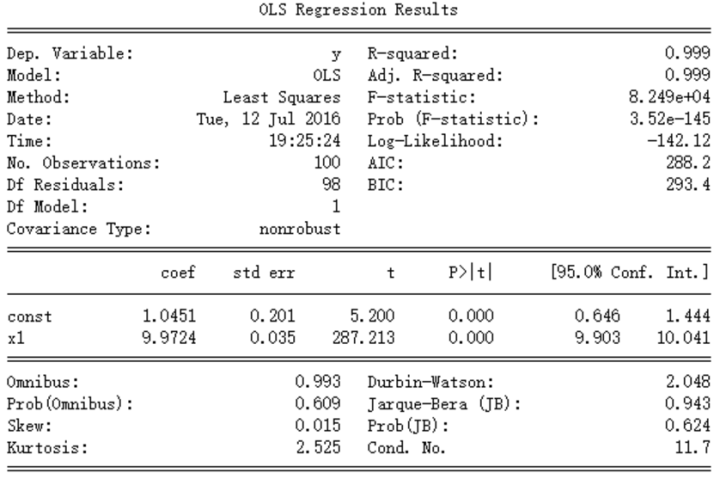

本文是一个简化的实践指南。阅读完这篇文章之后，你将可以快速使用statsmodels库进行最小二乘回归。
线性回归模型
对于一元线性回归，其回归模型是：
其回归系数应为：
$\beta_0, \beta_1$
对于多元线性回归，其回归模型是：
其回归系数应为：
$\beta_0, \beta_1, \beta_2, …, \beta_n$
其中$\beta_0$为常数项。
代码实现和解释
1 | class statsmodels.regression.linear_model.OLS(endog, exog=None, missing='none', hasconst=None, **kwargs) |
我们使用statsmodels的OLS类进行初始化，其重要参数是前两个。
endog —— 因变量
exog —— 自变量
注意如果要实现多元线性回归的话，那么其输入应该是一个这样的矩阵：
这里要注意两点：
- OLS类默认不提供常数项，所以需要手动添加一列常数项。statsmodels提供了方便地添加常数项的方法。
- 每一列都是一个自变量。所以可以使用这样的方法进行拼接：
1 | # 假设数据以list的方法输入 |
